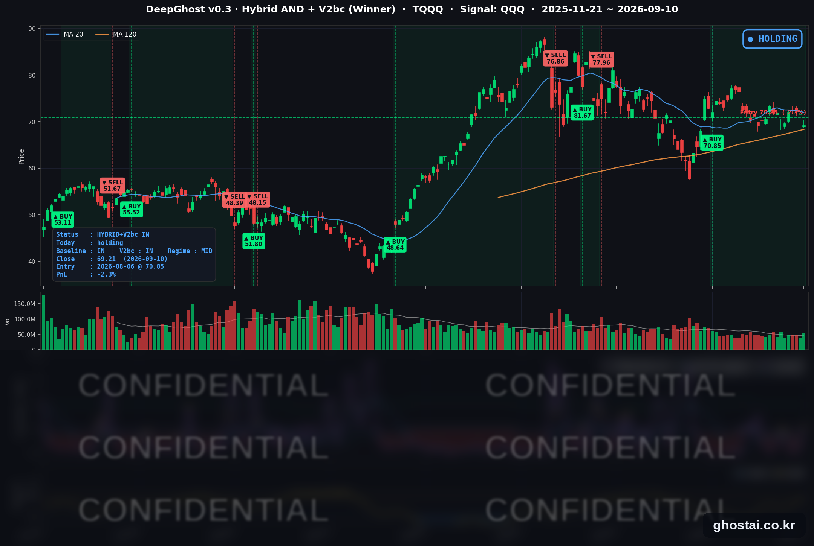

👻 매일 시그널과 히스토리를 홈페이지에서 한눈에 → www.ghostai.co.kr
회원 페이지 안내 — 회원 가입하시면 커버리지 전 종목의 원본 시그널과 분석 레포트를 매일 확인하실 수 있습니다. 회원 페이지는 블로그·유튜브보다 먼저 업데이트됩니다. 선착순 100명을 모집하고 있으며, 이메일과 필명만으로 가입하실 수 있고 서비스 사용료는 받지 않습니다. 가입 신청 후 운영자 승인을 거쳐 이용하실 수 있습니다.
8월 생산자물가의 근원 지표는 예상을 밑돌았지만 상승분 대부분이 에너지에서 나왔고, 국채 금리는 30년물 기준 22년 만의 최고 종가로 올라섰습니다. 아직 시그널은 보유이지만 오늘 오라클 실적을 장에 어떻게 반영하느냐에 따라서 매도 신호가 나올 수도 있겠습니다. 항상 말씀드리지만 이런 장일수록 한발 떨어져 룰대로 매매 하시기 바랍니다. 불안할수록 반대로 행동하는게 맞을때가 많습니다.
📊 오늘의 매매 신호
| 항목 | 내용 |
|---|---|
| 오늘 할 일 | ✅ 아무것도 안 해도 됩니다 |
| 포지션 상태 | 📈 TQQQ 보유 중 (IN POSITION) |
| 매수 진입일 | 2026-08-06 (25거래일째) |
| 진입가 → 현재가 | $70.85 → $69.21 |
| 현재 포지션 수익 | -2.31% |
TQQQ 시그널 — IN POSITION
현재 상태: 매수 포지션 유지 중 | 이번 포지션 수익률 -2.31%

나스닥100(QQQ)이 -1.06%, TQQQ는 -3.27% 내려 69.21달러로 마감했습니다. 전략의 평가손익은 전 거래일 +0.99%에서 -2.31%로 바뀌었습니다. 8월 6일 진입 이후 처음으로 손실 구간에 들어선 날입니다. 오늘로 25거래일째 보유 상태이고, TQQQ 쪽에서 새로 발생한 매매 신호는 없습니다.
낙폭이 어디서 만들어졌는지가 오늘의 특징입니다. QQQ는 전일 종가 대비 -1.22%로 열린 뒤 정규장에서는 +0.16% 움직였습니다. 8월 생산자물가가 개장 두 시간 전에 나왔기 때문에 하루 손실이 개장 전에 사실상 확정됐고, 장이 열린 뒤에는 지수 레벨이 거의 이동하지 않았습니다.
오늘 미국 시장 — 시황 요약
지수 마감
| 지수 | 종가 | 등락률 |
|---|---|---|
| S&P 500 | 7,591.70 | -0.58% |
| 나스닥 종합 | 26,081.73 | -0.65% |
| 다우존스 | 52,064.10 | -0.60% |
| 러셀 2000 | 2,890.95 | -1.04% |
| QQQ (나스닥100) | 708.69 | -1.06% |
| TQQQ | 69.21 | -3.27% |
네 지수 모두 1% 안팎으로 내렸습니다. 소형주 러셀 2000이 -1.04%로 가장 약했고 나머지 셋은 서로 큰 차이가 없었습니다. 금리가 오른 날의 통상적인 서열입니다.
하락은 개장 전에 끝났습니다. S&P 500 ETF(SPY)는 갭 -0.57%로 열린 뒤 장중 -0.03%로 제자리였고, QQQ도 갭 -1.22% 뒤 장중에는 +0.16%였습니다. 지수 레벨만 보면 정규장은 차분했지만 종목별 분산은 컸습니다.
국채 금리 동향
| 만기 | 수익률 | 전 거래일 대비 |
|---|---|---|
| 3개월 | 3.845% | +4.0bp |
| 5년 | 4.733% | +11.9bp |
| 10년 | 4.944% | +10.7bp |
| 30년 | 5.361% | +7.5bp |
네 만기 모두 2026년 최고 종가입니다. 특히 30년물 5.361%는 2004년 6월 29일 이후 22년 만의 최고치이고, 10년물 4.944%는 2023년 10월 25일 이후 가장 높습니다. 장단기 스프레드(10년−3개월)는 +109.9bp로 정상 커브를 유지했습니다.
커브 이동은 중간 만기가 주도했습니다. 5년물 +11.9bp가 가장 컸고 30년물 +7.5bp가 가장 작았습니다. 먼 미래의 물가 기대보다 향후 1~5년의 정책 금리 경로를 다시 반영한 움직임입니다. 커브가 역전이 아니라 정상 상태에서 전 구간 올랐다는 것은 침체 우려가 아니라 물가와 금리 경로를 반영한 결과라는 뜻입니다.
연준 발언 & 금리 패스
9월 17일(목)까지 FOMC 블랙아웃입니다. 오늘 위원 발언은 없었고 회의 전까지도 없습니다. 발언 공백 구간이라 금리 경로는 지표만으로 조정됐습니다.
생산자물가 발표 직후 연방기금 선물 기준 9월 25bp 인상 확률은 약 65%에서 약 70%로 올랐습니다. FOMC는 9월 15~16일이며 경제전망요약(SEP)이 함께 나옵니다. 회의 전 남은 물가 지표는 9월 11일(금) 8월 소비자물가 하나뿐입니다.
오늘의 핵심 이슈
-
근원 물가는 예상을 밑돌았는데 금리는 다년 최고로 올랐습니다. 8월 생산자물가는 헤드라인이 전월비 +0.4%(전년비 +5.4%)였지만, 식품·에너지를 뺀 근원은 전월비 +0.2%로 예상보다 낮았습니다. 상승분이 어디서 나왔는지가 답입니다 — 최종수요 재화가 +1.1% 오르는 동안 서비스는 +0.1%였고, 재화 상승은 에너지 +4.2%, 그중 경유 +24.1%가 끌어올렸습니다. 물가 지표라기보다 유가 지표에 가까웠던 셈이고, 채권 시장은 근원 둔화보다 에너지발 물가 지속 가능성에 반응했습니다.
-
국제 유가가 8% 넘게 올랐습니다. WTI는 +8.20% 오른 103.93달러, 브렌트는 +7.65% 오른 108.95달러로 둘 다 5월 19일 이후 최고 종가입니다. 페르시아만 긴장이 배경으로, 이란이 미국의 해상 봉쇄에 맞서겠다는 입장을 냈고 후티 세력이 사우디 에너지 시설을 공격해 일부 가동이 중단됐다는 보도가 나왔습니다.
-
유가가 올랐고 금은 내렸습니다. 금 선물은 -1.30%, 금 ETF(GLD)는 -1.73%였습니다. 물가 헤드라인이 금을 밀어 올리는 대신 실질금리 상승이 앞선 결과입니다. 인플레이션 헤지 수요보다 금리 부담이 컸던 구도입니다.
변동성 & 투자심리
VIX는 17.84(+8.4%)로 20거래일 최고입니다. 9월 3일 14.32를 저점으로 방향이 위로 잡혔습니다. 다만 절대 레벨은 여전히 20 아래입니다.
공포탐욕지수는 36.3(전일 39.5)으로 공포 구간이 이어졌습니다.
정리하면 중립~비관입니다. 지수 낙폭은 1% 안팎으로 제한적이었지만 금리가 전 만기에서 다년 최고를 기록했고 유가가 100달러를 크게 넘어선 상태라 물가 쪽 부담이 커졌습니다. 소비자물가 발표를 앞두고 관망하는 성격이 강한 하루였습니다.
매크로 & 원자재
| 품목 | 종가 | 등락률 |
|---|---|---|
| WTI 원유 | $103.93 | +8.20% |
| Brent 원유 | $108.95 | +7.65% |
| 금 선물 | $4,358.50 | -1.30% |
| 금 ETF (GLD) | $396.36 | -1.73% |
| 원유 ETF (USO) | $158.38 | +5.61% |
원유 ETF(USO)는 갭 +3.21%, 장중 +2.33%로 개장 전후 모두 올라 지수와 반대 방향이었습니다. 같은 날 유럽중앙은행도 금리를 인상해, 주요국 금리가 함께 올라가는 구도가 미국 장기물 매도에 더해졌습니다.
주요 종목 동향
| 종목 | 종가 | 등락률 | 비고 |
|---|---|---|---|
| AAPL | 326.57 | +3.56% | 폴더블 아이폰 공개 후 애널리스트 반응. 갭 +0.46%, 장중 +3.09%로 상승분 대부분이 정규장에서 발생 |
| GOOGL | 332.60 | +0.59% | 빅테크 중 상승 |
| QCOM | 176.88 | +0.27% | 갭 -2.42%에서 장중 +2.76% 회복 |
| MSFT | 492.44 | +0.16% | 장중 +0.84% 반등 |
| NFLX | 76.01 | -0.03% | 변동 거의 없음 |
| AMZN | 251.89 | -0.20% | |
| AVGO | 360.83 | -0.97% | 반도체 약세 속 낙폭 제한 |
| TSLA | 363.56 | -1.16% | 갭 -2.01%에서 장중 +0.88% 회복 |
| META | 644.38 | -1.42% | 갭은 없었고 하락이 전부 장중에 발생 |
| NVDA | 218.36 | -2.37% | 반도체 동반 약세 |
| MU | 977.41 | -4.90% | Netlist의 DDR5 특허 소송과 메모리 업황 우려가 겹침 |
| INTC | 100.32 | -5.57% | Piper Sandler가 중립 의견·목표주가 110달러로 커버리지 개시 |
상하단 격차가 9.1%포인트입니다. 지수는 1% 안팎으로 내렸는데 커버리지 안에서는 AAPL +3.56%와 INTC -5.57%가 갈렸습니다. 매크로가 지수를 개장 전에 정리하고, 정규장은 개별 재료가 끌고 간 하루입니다.
반도체가 약세를 주도했습니다. INTC·MU·NVDA·AVGO가 나란히 내렸습니다. INTC는 주가가 1년 새 네 배 이상 올라 추가 상승 여지가 제한적이고 현재 시가총액의 상당 부분이 파운드리 점유율 확대를 전제한다는 지적이 하락 사유였습니다. MU는 특허 소송이 미국 내 수입·판매 금지를 청구하는 형태라는 점에 7월 반도체 출하 감소 보도가 더해졌습니다.
다음 거래일 일정
- 9월 11일(금) 8월 소비자물가 — FOMC 전 마지막 물가 지표입니다. 오늘 생산자물가가 에너지 주도로 나온 만큼 에너지 항목과 근원의 괴리가 관전 포인트입니다. 개장 전 발표라 오늘처럼 갭으로 반영될 가능성이 큽니다.
- 국제 유가 — 페르시아만 상황이 그대로면 100달러대가 유지되며 물가 기대를 계속 자극합니다. 되돌림이 나오면 금리 상승 압력도 함께 줄어듭니다.
- 9월 15~16일 FOMC + SEP — 현재 25bp 인상 확률은 약 70%입니다. 블랙아웃이 9월 17일까지라 그 전까지 연준 발언은 없습니다.
Ghost.AI — Quantitative AI Investment
Model: DeepGhost v0.3 | Transformer-Based Deep Learning
Coverage: 13 tickers | Updated every trading day after US market close
⚠️ 본 자료는 정보 제공 목적으로만 작성되었으며 투자 권유가 아닙니다. 모든 투자의 책임은 투자자 본인에게 있습니다. 과거 성과가 미래 수익을 보장하지 않습니다.
[유의사항]
- 본 서비스는 불특정 다수를 대상으로 발행되는 단방향 정보 제공 서비스이며, 투자자 개인의 재산 상황·투자 목적·위험 선호도를 반영한 개별 투자 조언이 아닙니다.
- 고스트에이아이 주식회사는 고객과 쌍방향 의사소통(개별 상담, 맞춤형 자문 등)을 제공하지 않습니다.
- 본 콘텐츠는 투자 권유 또는 매매 주문의 청약·청약의 권유에 해당하지 않으며, 최종 투자 판단 및 그에 따른 손익의 책임은 전적으로 투자자 본인에게 있습니다.
고스트에이아이 주식회사